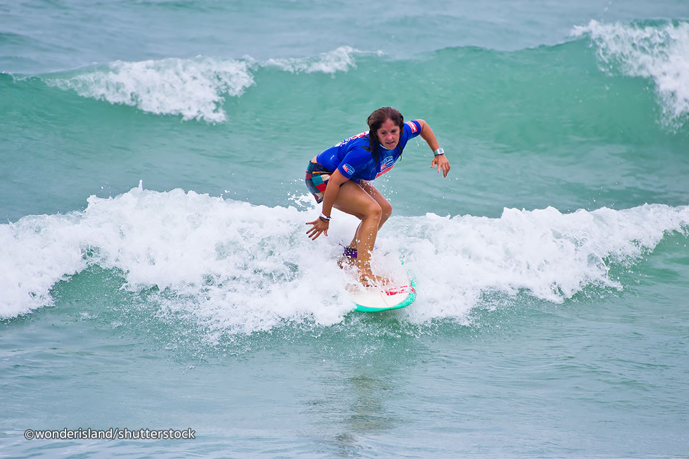

Bentota Beach
Located towards the south of Colombo along the infamous south-west
coastline,
the Bentota Beach consists of a Resort Complex with several
resorts, villas,
Railway station, post office, shopping arcade, cafeteria and
an open air theatre
showing folk and mask dancing with clusters of
palms dotting the area. This also
offers the perfect antidote for a beach
holiday with a number of water sports and river
cruises available.
"
style="width:100%" onmouseover="myFunction(this);" >


![<b>Negambo Beach </b>
<br><p>A characteristic fishing town 37 km north of Colombo, Negombo <br>is a mere
6 km away from the Bandaranaike International Airport.<br> Set amidst lush groves of
coconut palms, the town breathes <br>the spirit of the sea. Negombo is a gourmet paradise
<br>with plenty of fresh sea food. Old world fishing crafts like<br> the outrigger canoe and
the catamaran bring in seer,<br> skip jack, herring and mullet, while lobster and prawns<br>
are caught in the lagoon. Various water sports <br>activities can also be enjoyed while
Negombo spells out a fun-filled<br> beach holiday in Sri Lanka.<br><br><br>
</p>](negambo1.jpg)